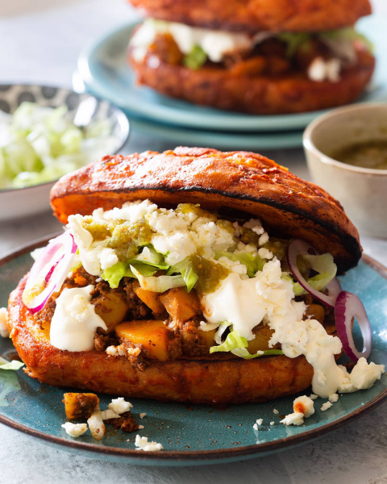

Authentic Mexican Pambazo Recipe

Pambazos are a Mexican staple and a dish that can be created with various ingredients.
Pambazos have been around since Colonial Times, it was a staple back then and still is to this day. They consist of two pieces of bread, filled with various fillings and spreads. The bread is soaked in guajillo chili sauce and topped with sour cream, queso fresco and lettuce. Now lets get ready to make them!
Ingredients Needed
For pambazos:
- 4-6 teleras or bolillo bread
- 1 cup of queso fresco (crumbled)
- 1/2 cup of red onions
- 1 1/2 cup of lettuce
- 1/2 cup of Mexican sour cream
- Oil for frying
- Red or green salsa
For the guajillo sauce:
- 6 guajillo peppers (stems, seeds and veins removed)
- 1 peeled garlic clove
- 1 tsp oregano
- 1/2 tsp salt
For the filling:
- 2 Mexican chorizo sausages
- 2 1/2 cups of peeled and diced potatoes
- 2 tbsp oil
Instructions
Making the guajillo sauce:
- Place the peppers in a pot with hot water. Let the peppers soak in the water for 10 minutes, and make sure to cover the pot.
- Drain the pot with the peppers and place in a blender with the garlic, oregano, and salt. Add 1 cup of water and blend for 1-2 minutes, or until smooth.
- Strain the sauce on a bowl and set aside.
Making the filling:
- Boil potatoes in salted water until tender.
- Heat oil over medium-low heat. Add the chorizo and cook for about 5 minutes or until lightly crispy.
- Dice the potatoes and add to the chorizo. Mix everything well, and put aside.
Frying the bread:
- On a non-stick pan or comal, heat 3-4 tablespoons of oil over medium heat.
- Dip the bread into the guajillo sauce, make sure it coats the bread well on the sides.
- Place the bread on the pan and fry for about one minute per side, or until slightly crispy.
- Flip the bread and allow it to fry on the sides as well. Add more oil if necessary.
Assembly
- Place bread on a plate, and first add the potato filling in the bottom piece.
- Next, add some lettuce and onions, then top it with queso fresco and sour cream.
- Close the pambazo with the top piece of bread and serve with your favorite Mexican salsa!
Nutrition
- Calories: 640kcal
- Carbohydrates: 63g
- Protein: 25g
- Fat: 31g
- Saturated Fat: 10g
- Polyunsaturated Fat: 3g
- Monounsaturated Fat: 5g
- Trans Fat: 1g
- Cholesterol: 66mg
- Sodium: 1739 mg
- Potassium: 603mg
- Fiber: 6g
- Sugar: 5g